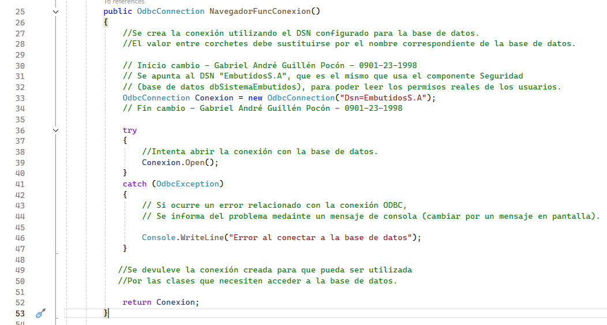

El Navegador utiliza ODBC para comunicarse con la base de datos. ODBC funciona como un intermediario entre la aplicación y el motor de datos; su configuración se identifica mediante un nombre llamado DSN.
¿Cómo se realiza la conexión?
El modelo crea una conexión utilizando el DSN EmbutidosS.A y luego intenta abrirla. El formulario consumidor no recibe credenciales ni cadenas de conexión: solamente indica la tabla que necesita utilizar.
Flujo utilizado por el componente:
Formulario → Navegador → ODBC → Base de datos
Ubicación de la conexión ODBC
Capa Modelo → Conexión → clase ClsConexionBD

¿Qué revisar si no aparecen datos?
- Comprobar que el DSN
EmbutidosS.Aexista en Windows. - Probar la conexión ODBC sin mostrar contraseñas en la captura.
- Confirmar que la tabla configurada exista en la base de datos.
- Presionar Consultar o Refrescar y revisar la cuadrícula.
Ubicación de la configuración del DSN
Windows → Administrador de orígenes de datos ODBC → DSN EmbutidosS.A

Ubicación del resultado de la conexión
Vista en ejecución → formulario Form1 → tabla tblempleado